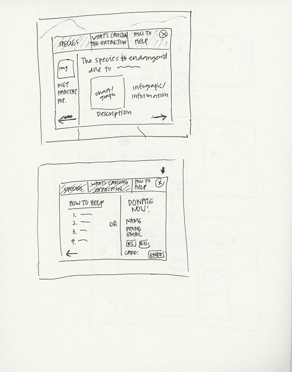

Paper Prototype
Prototype 1
In the first prototype, I realized a few things that the user needed in order to receive the best user experience. One thing that I definitely needed to add was a legend in order for the user to understand why the dots are different sizes. The legend will contain information on the species conservation status. Another thing that needed clarification was the navigation labeling. I first used "Causes" and "Help" as two of the navigation tabs. However, when testing the prototype with my partner, they said that those two tabs were misleading. They thought that "Causes" meant something about the causes the species stood for, which doesn't really make sense and they thought that "Help" referred to needing help using the site.
Prototype 2
In my second prototype, I added a legend which definitely made things a lot clearer to the user. I decided to change the two confusing nagivation names to "Causes to the Endangerment" and "How to Help". This made it easier for the user to understand what each page would represent. At the bottom of each popup, there would be arrows that would lead users to the next page. My partner suggested putting the name of the next tab with the arrow so that the user will have a clear understanding that clicking on the arrow would lead them to the next tab. We decided that both the tab navigation at the top and the bottom arrow navigation were necessary in order to ensure the best user experience. The top navigation bar is so that the user can jump around the different pages in case they want to reread a page. The bottom navigation gives the user a sense of sequence of which order to read the pages in. Both of these navigation options combined best helped the user navigate around the site.
